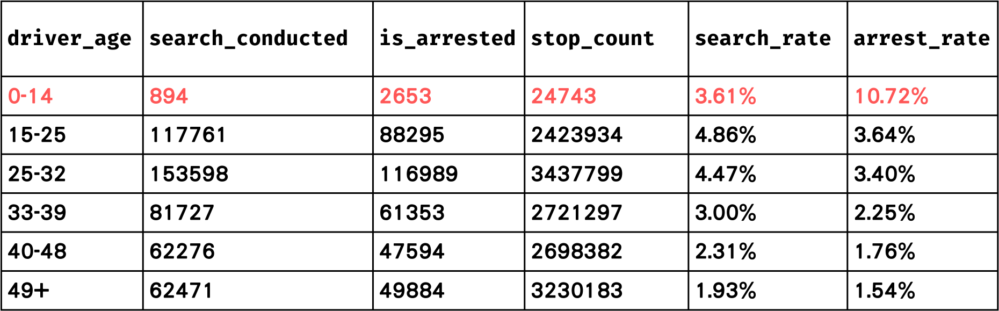

我沒做錯，警察別碰我｜分析加州交通事件警察攔查以及警察暴力致死事件數據資料
專案概述
1. 資料前處理
2. 資料觀察
3. 第一題視覺化：加州交通事件警察執法年曆
4. 第二題假設驗證：加州警察執法上是否受種族歧視影響？
5. 第三之一題相關性分析：加州交通事件搜查率、逮捕率、警察暴力率相關性分析
6. 第三之二題地理資料：警察執法地圖
資料蒐集與前處理
本專案使用的資料包括：
1. 加州警察對交通事件攔查個案的處理數據 (Stanford Open Policing Project - California: Data on Traffic Pedestrian stops by Police in California)
2. 加州所有警察暴力執法過當致死的數據 (Campaign Zero: Mapping Police Violence)
3. 加州地理空間資料 (Californian Geographical Data)
資料前處理：
除了一般的清理以外，我們有做在交通事件中，被警察攔查後遭到搜查的比率，以及被攔查後遭到逮補的比率，以下將簡稱為搜查率與逮捕率。此外，我們也有計算每個郡警察執法過當致死的比率，以下將簡稱為警暴率。
搜查率：被警察攔查後執行搜查人數/被警察攔查人數
逮捕率：被警察攔查後執行逮捕人數/被警察攔查人數
警暴率：因警察暴力執法過當致死人數/該郡2014年人口數
資料觀察
資料分析面向：
1. 性別：依照各種不同常見的交通違規事件分類，看觸犯規定的男女比（例如酒駕可能男性比例較高）
2. 年齡：各年齡段的搜查率、逮捕率、警暴致死率分別是多少，以及何年齡層居冠？
3. 人數：
加州警察在2013-2016年間因為各種原因在執法中殺了多少人？
又因為交通事件違規逮補多少人？
4. 地區：
哪個郡的搜查率最高？
哪個郡的警察暴力致死事件最多？
1. 性別：依照各種不同常見的交通違規事件分類，看觸犯規定的男女比

由上長條圖表可知，無論是在酒駕、設備（有無違法改裝、違規未開頭燈等）、駕駛違規（未按規定讓行、違規超車等），皆是男性遠高於女性，組間差距不顯著
2. 年齡：各年齡段的搜查率、逮捕率、警暴率分別是多少

0-14歲居冠：因為0-14歲兒童與少年本不應該駕駛，故一旦被警察攔查發現，自然有較高機率被搜查和逮補
3. 人數：加州警察在2013-2016年間殺多少人？因交通違規事件逮補多少人？
在交通攔查後搜查人數：448738
在交通攔查後逮捕人數：344562
因警察暴力執法過當致死人數：12339
4. 地區：哪個郡搜查率最高？哪個郡警察暴力致死率最高？

第一題視覺化：加州交通事件警察執法年曆
｜哪個月份、日期被搜查、逮捕比例最高呢？年底？月底？
計算方式：
1. 計算每一年中每一天的搜查率(SR)與逮捕率(AR)
2. 把每一年中相對應日期的數據取平均
例：1月1日的搜查率 = (2013年1月1日搜查率 + 2014年1月1日搜查率 + 2015年1月1日搜查率 + 2016年1月1日搜查率) / 4
搜查年曆：

1. 1-6月搜查率相對中庸，尤以5月最為平均
2. 7-12月搜查率大起大落，尤以8、10月變異最大
3. 紅藍相間有些許規律可循：三天紅、四天藍
逮捕年曆：

1. 1-6月逮捕率相對中庸，尤以5月最為平均
2. 7-12月逮捕率大起大落，尤以8、10月變異最大
3. 紅藍相間有些許規律可循：三天紅、四天藍
月份趨勢：


分析與小結：
1. 上半年變異小(3-6月為最)；下半年變異大(8-10月為最)
2. 紅藍相間規律：三天紅、四天藍
推測原因：與警察執勤時數有關(3天12hr、4天10hr)
3. 最容易被搜查和逮捕月份：8月
我們原先假設加州交通警察會因為業績壓力在月底或年底比平常更積極地進行搜查與逮捕。經過數據統計、視覺化等探勘後，我們發現無類似趨勢，反而是上下半年數據的變異程度差異以及紅藍相間的規律更加明顯。
第二題假設驗證：加州警察執法上是否受種族歧視影響？｜哪個種族被搜查、逮捕比例最高呢？
各個違規罪名的情況下，不同種族的搜查率

1. 排除other，在各個罪行中亞裔是搜查率最低的族群
2. 在酒駕、設備、駕駛違規中，拉丁裔美國人對比白人都有較高的搜查率
3. 在設備、駕駛違規中，非裔美國人對比白人都有較高的搜查率
4.根據數據，加州交通警察最容易對拉丁裔進行搜查
各各個違規罪名的情況下，不同種族的逮捕率

1. 排除other，在各個罪行中亞裔是逮捕率最低的族群
2. 在酒駕、設備、駕駛違規中，拉丁裔美國人對比白人都有較高的逮捕率
3. 在設備、駕駛違規中，非裔美國人對比白人都有較高的逮捕率
4.根據數據，加州交通警察最容易逮捕拉丁裔
各個違規罪名的情況下，有色人種vs白人的搜查率與逮捕率


1. 有色人種在各類罪行的逮捕率都比白人高！
2. 排除other罪行，因為其包含太多不同罪名（可能與交通無關）
被警察暴力執法過當致死的種族圓餅圖

1. 拉丁裔佔最多數，其次是白人（與人口比例有關？）
2. 39% of Californians are Latino, 35% are white, 15% are Asian American or Pacific Islander, 5% are Black, 4% are others
3. 以比例上來說，只佔加州總人口5％的非裔，卻佔了警暴致死的16%
分析與小結：
假設驗證：加州警察有種族歧視嗎？
我們假設，因為加州警察多少存在種族歧視，所以預測有色人種最容易在攔查後被搜查、逮捕，以及施以警暴，尤以黑人為最。
經過數據統計、視覺化等探勘後，我們發現確實有類似趨勢，但在搜查、逮捕方面並沒有到極為顯著。
然而，在警察暴力執法過當致死方面，非裔顯然有較高的機率有此遭遇！
第三之一題相關性分析：加州交通事件搜查率、逮捕率、警暴率相關性分析
搜查率 vs 逮捕率：

高度正相關
合理：通常在搜查後才會執行逮捕，而搜查實施應該會有合理懷疑事由(有可能被逮捕)。
逮捕率 vs 警暴率：

搜查率 vs 警暴率：

皆呈低度正相關
合理：搜查率與逮捕率的資料源頭是因交通事件而攔查後實施搜查或逮捕的紀錄，而警暴率的資料源頭是各郡警察暴力致死的數量統計。兩者的數據範圍不同，因此較難看出兩者的關係。
第三之二題地理資料：警察執法地圖｜哪個郡
搜查率、逮捕率、警暴率 最高呢？
加州各個郡(County)的搜查率&逮捕率：


Lake County之搜查率與逮捕率居冠
加州各個郡(County)的警暴致死率：

分析與小結：
1. 逮捕率和搜查率呈高度正相關
2. 逮捕率、搜查率與警暴率皆呈低度正相關
推測原因：兩者資料範圍不同。
修改方向：若要確實比較兩者，應該用各郡總搜查或總逮捕人數(不應侷限在交通事件)去和警察暴力致死人數作比較分析。
3. Lake County之搜查率與逮捕率皆為加州最高
4. Trinity County之警暴率為加州最高，推測可能與其人口偏少有關
5. Kern County之警暴率為加州第五名，而其人口排名為加州第11名，因此該郡（可能相對不安全？）
分工表
徐子淵：資料搜索、資料前處理、資料視覺化(各統計圖表、年曆、相關性分析)、製作PPT、HTML網頁製作
魏子鈞：資料搜索、資料視覺化(警察執法暴力地圖)、製作PPT